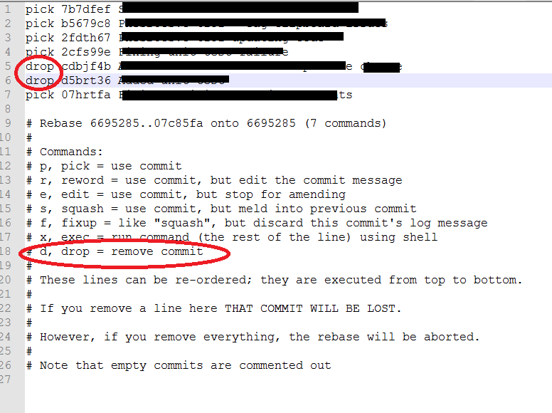

I was working with a friend on a project, and he edited a bunch of files that
shouldn't have been edited. Somehow I merged his work into mine, either when I
pulled it, or when I tried to just pick the specific files out that I wanted.
I've been looking and playing for a long time, trying to figure out how to
remove the commits that contain the edits to those files, it seems to be a
toss up between revert and rebase, and there are no straightforward examples,
and the docs assume I know more than I do.
So here is a simplified version of the question:
Given the following scenario, how do I remove commit 2?
$ mkdir git_revert_test && cd git_revert_test
$ git init
Initialized empty Git repository in /Users/josh/deleteme/git_revert_test/.git/
$ echo "line 1" > myfile
$ git add -A
$ git commit -m "commit 1"
[master (root-commit) 8230fa3] commit 1
1 files changed, 1 insertions(+), 0 deletions(-)
create mode 100644 myfile
$ echo "line 2" >> myfile
$ git commit -am "commit 2"
[master 342f9bb] commit 2
1 files changed, 1 insertions(+), 0 deletions(-)
$ echo "line 3" >> myfile
$ git commit -am "commit 3"
[master 1bcb872] commit 3
1 files changed, 1 insertions(+), 0 deletions(-)
The expected result is
$ cat myfile
line 1
line 3
Here is an example of how I have been trying to revert
$ git revert 342f9bb
Automatic revert failed. After resolving the conflicts,
mark the corrected paths with 'git add <paths>' or 'git rm <paths>'
and commit the result.
Answer
The algorithm that Git uses when calculating diffs to be reverted requires
that
- The lines being reverted are not modified by any later commits.
- There not be any other "adjacent" commits later in history.
The definition of "adjacent" is based on the default number of lines from a
context diff, which is 3. So if 'myfile' was constructed like this:
$ cat >myfile <<EOF
line 1
junk
junk
junk
junk
line 2
junk
junk
junk
junk
line 3
EOF
$ git add myfile
$ git commit -m "initial check-in"
1 files changed, 11 insertions(+), 0 deletions(-)
create mode 100644 myfile
$ perl -p -i -e 's/line 2/this is the second line/;' myfile
$ git commit -am "changed line 2 to second line"
[master d6cbb19] changed line 2
1 files changed, 1 insertions(+), 1 deletions(-)
$ perl -p -i -e 's/line 3/this is the third line/;' myfile
$ git commit -am "changed line 3 to third line"
[master dd054fe] changed line 3
1 files changed, 1 insertions(+), 1 deletions(-)
$ git revert d6cbb19
Finished one revert.
[master 2db5c47] Revert "changed line 2"
1 files changed, 1 insertions(+), 1 deletions(-)
Then it all works as expected.
The second answer was very interesting. There is a feature that has not yet
been officially released (though it is available in Git v1.7.2-rc2) called
Revert Strategy. You can invoke git like this:
git revert --strategy resolve
and it should do a better job of figuring out what you meant. I do not know
what the list of available strategies is, nor do I know the definition of any
strategy.
Suggest
Here is an easy solution:
Where x is the number of commits.
Enter drop before your commit:

And that's it, you are done. If the commit you drop was already on the remote,
you will have to force push. Since --force is considered harmful, use git
push --force-with-lease.